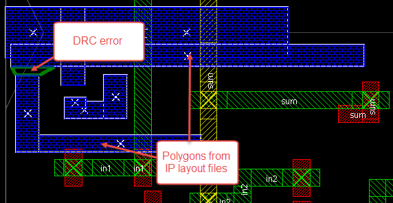

IP Merge is configured
in the Calibre RealTime Digital Options dialog box. After IP Merge
is set up, DRC runs use the provided layout files to better identify
rule violations.
Procedure
- Click the DRC
Options button (
 ) to
open the Calibre RealTime Options dialog box.
) to
open the Calibre RealTime Options dialog box.
- In the DRC tab,
ensure that the correct rule file has been loaded and that the other settings
are configured properly.
- Click the IP
Merge tab.
- Select
“Merge IP layout files with design for DRC run.”
- Customize your configuration. See “IP Merge Tab in the Calibre RealTime Digital Options Dialog Box” for more information on these options.
Select
“Report conflicts to the log file” to print cell name conflicts
to the log file. Conflicts occur when multiple cells in the layout
files share the same name.
Select “Highlight IP polygons” to highlight
the polygons from the IP Merge files that are near the DRC violations.
Polygons are highlighted if only one result is selected.
Selecting this makes the following highlighting sub-options available:
Enter a number for “Polygons limit” to restrict
the number of IP polygons to highlight. The default value is 10000.
Choose
an option under the “Layers” dropdown menu to specify which layers
to highlight.
Select “Halo size (UU)” and enter a number
to customize the halo size for the layers in the IP Merge files.
This option is disabled by default.
When this option is enabled, the default size is 1 user unit.
When this option is disabled, a highlight halo of twice the smallest
track step size is used.
- Specify
your IP Merge files:
- Click
the button in the “Layout
files” or “File List” rows.
- Navigate
to where your files are stored, then select them. You can select
one or more files.
- Click Open.
IP layout files for the active configuration are loaded
automatically on RealTime startup if IP Merge is enabled.
You can select any combination of layout files and file lists:
- Layout files
GDS or OASIS format IP layout files
- File list
Text files that contain a list of IP layout files, with one
file per line
Wildcard characters and directories are supported for file lists
and layout files. See “Supported File Types for IP Merge” for
more information.
- Click OK to
close the dialog box.
- In the
RealTime toolbar, click the
 button
to run DRC.
button
to run DRC.
Results
DRC violations are highlighted in the design tool. These violations
take into account the contents of the IP layout files.
The following image shows a DRC error highlighted with the option
“Highlight IP polygons with DRC result” enabled. Polygons from the
IP layout files have been highlighted in blue.
Figure 1. Layout
View After Running DRC with IP Merge